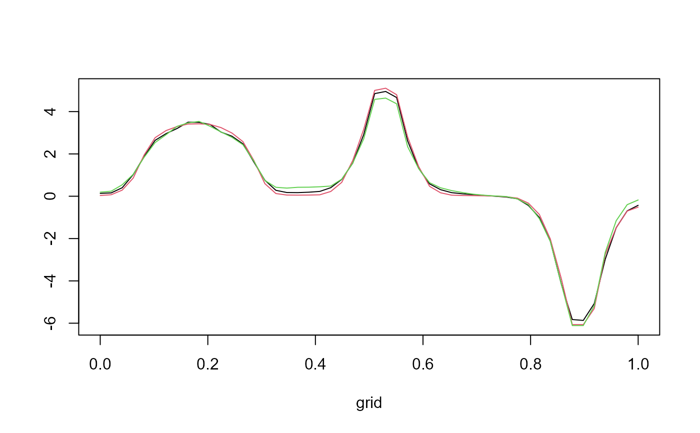

Compute summaries of Gibbs Sampler chains.
compute_chains_info(chain, param)Arguments
- chain
a list given by the
Bliss_Gibbs_Samplerfunction.- param
a list containing:
- K
a vector of integers, corresponding to the numbers of intervals for each covariate.
- grids
a numerical vector, the observation time points.
- basis
a vector of characters (optional) among : "uniform" (default), "epanechnikov", "gauss" and "triangular" which correspond to different basis functions to expand the coefficient function and the functional covariates.
Value
Return a list containing the estimates of mu and sigma_sq, the
Smooth estimate and the chain autocorrelation for mu, sigma_sq and beta.
Examples
# \donttest{
param_sim <- list(Q=1,
n=100,
p=c(50),
grids_lim=list(c(0,1)))
data <- sim(param_sim,verbose=TRUE)
#> Simulation of the data.
#> Simulate functional covariate observations.
#> Choose a coefficient function.
#> Compute the outcome values.
param <- list(iter=5e2,
K=c(3),
n_chains = 3)
res_bliss <- fit_Bliss(data,param,verbose=TRUE,compute_density=FALSE,sann=FALSE)
#> Sample from the posterior distribution.
#> Chain 1:
#> Gibbs Sampler:
#> Initialization.
#> Determine the starting point.
#> Start the Gibbs Sampler.
#> 10%
#> 20%
#> 30%
#> 40%
#> 50%
#> 60%
#> 70%
#> 80%
#> 90%
#> 100%
#> Return the result.
#> Chain 2:
#> Gibbs Sampler:
#> Initialization.
#> Determine the starting point.
#> Start the Gibbs Sampler.
#> 10%
#> 20%
#> 30%
#> 40%
#> 50%
#> 60%
#> 70%
#> 80%
#> 90%
#> 100%
#> Return the result.
#> Chain 3:
#> Gibbs Sampler:
#> Initialization.
#> Determine the starting point.
#> Start the Gibbs Sampler.
#> 10%
#> 20%
#> 30%
#> 40%
#> 50%
#> 60%
#> 70%
#> 80%
#> 90%
#> 100%
#> Return the result.
#> Coefficient function: smooth estimate.
#> Support estimation.
#> Compute the (log) densities of the posterior sample.
param$grids <- data$grids
chains_info1 <- compute_chains_info(res_bliss$chains[[1]],param)
chains_info2 <- compute_chains_info(res_bliss$chains[[2]],param)
chains_info3 <- compute_chains_info(res_bliss$chains[[3]],param)
# Smooth estimates
ylim <- range(range(chains_info1$estimates$Smooth_estimate),
range(chains_info2$estimates$Smooth_estimate),
range(chains_info3$estimates$Smooth_estimate))
plot(data$grids[[1]],chains_info1$estimates$Smooth_estimate,type="l",ylim=ylim,
xlab="grid",ylab="")
lines(data$grids[[1]],chains_info2$estimates$Smooth_estimate,col=2)
lines(data$grids[[1]],chains_info3$estimates$Smooth_estimate,col=3)

# Autocorrelation
plot(chains_info1$autocorr_lag[,1],type="h")
 # }
# }